/UI/UX — Kids Learning App Design
An interactive learning app where bright kids build real skills through playful, guided activities — spelling, math, language development, and memory-enhancing exercises.
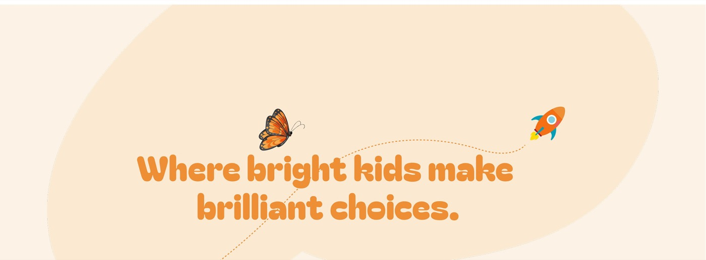
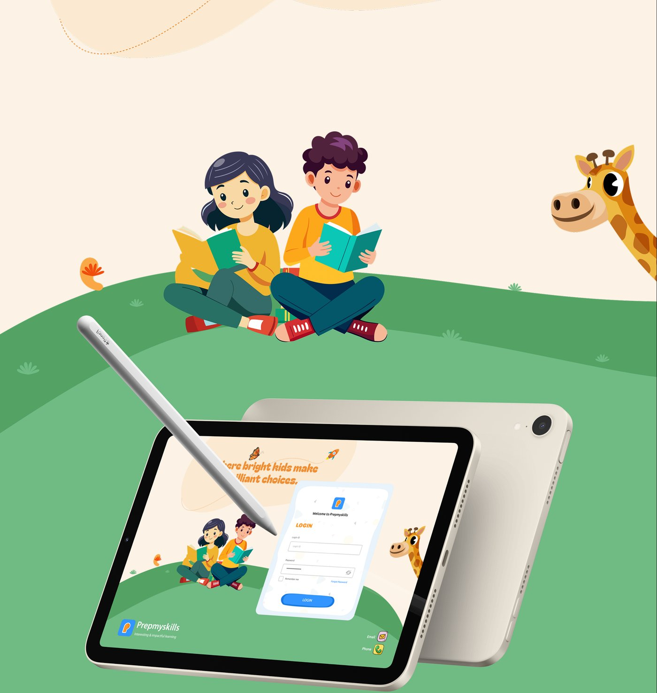
Prep My Skills is a comprehensive learning platform designed to nurture young minds through engaging, skill-building activities. It transforms essential concepts like spelling into an enjoyable experience by blending guided practice with creative exploration. The journey extends into interactive math, language development, and memory-enhancing exercises — making learning both effective and exciting.
The process of designing an interface can be divided into a number of stages. Design thinking is a non-linear, iterative process that teams use to understand users — moving through Empathise, Define, Ideate, and Prototype & Test.
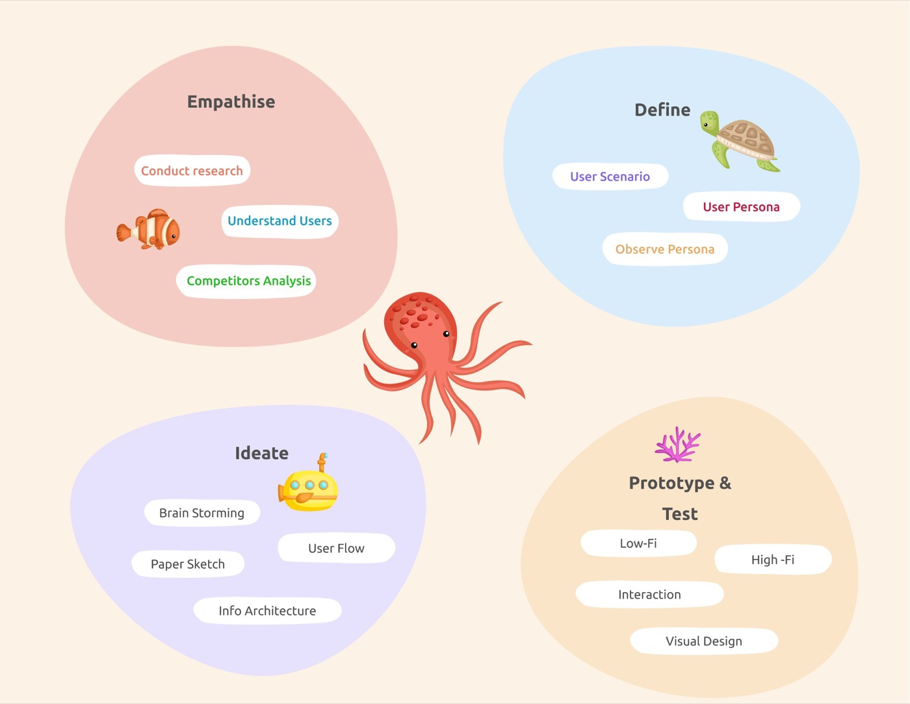
A three-week sprint carried the project from idea strategy through UX research and empathy mapping, into low-to-high-fidelity wireframes and visual design.
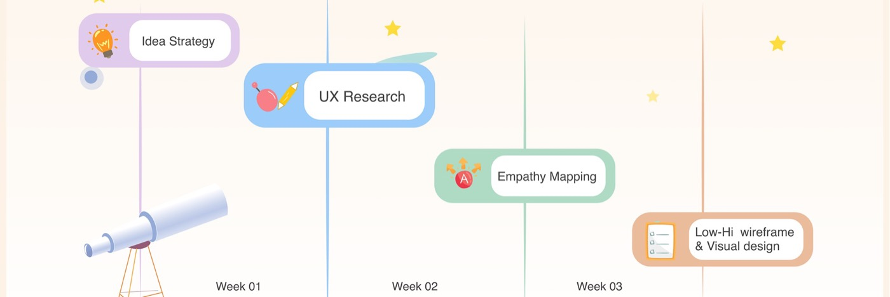
An empathy map was used to understand the thoughts, feelings, needs, and motivations of the target audience. It helped in gaining deeper insight into a child's perspective, informing a more customer-centric design.
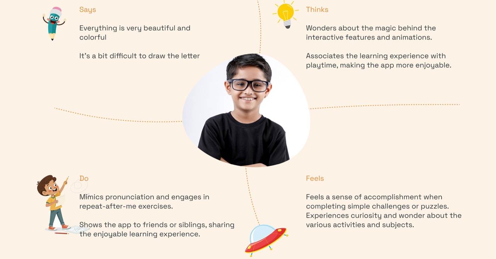
Meet Lily Davis — a curious, energetic preschooler who loves exploring new things, with a supportive family environment that encourages her to learn and play.
5 Years Loves Play Friendly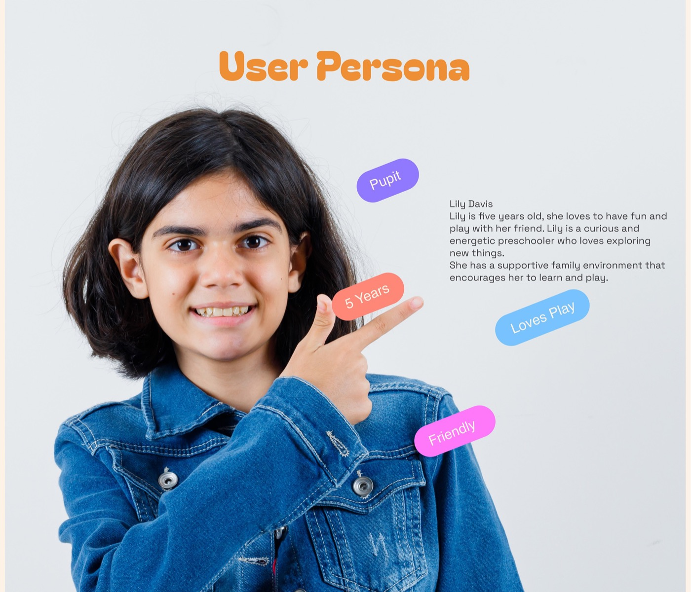
Style guides are an important tool for any organization. They help improve the quality, consistency, and professionalism of a product, and reduce errors while improving communication.
Ubuntu
Ubuntu is a geometric sans serif typeface published by Indian Type Foundry in 2014 — described as "an internationalist take on the geometric sans genre."
A shared component library — login cards, topic tiles, resource chips, and control buttons — kept every screen in the product consistent and easy for small hands to navigate.
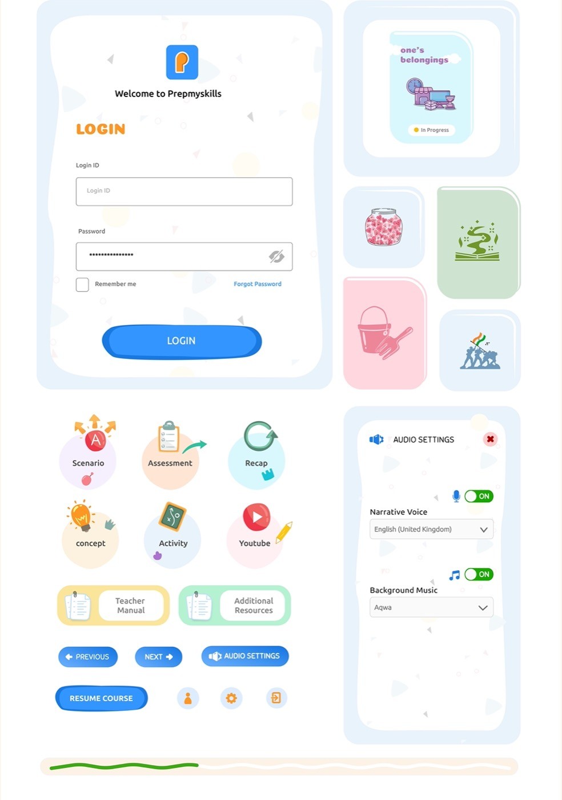
Tablet and phone layouts carry the same activity flow across devices, from login through topic dashboards and in-lesson controls.
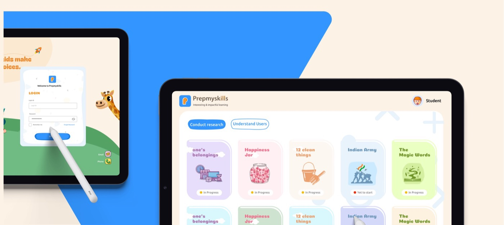
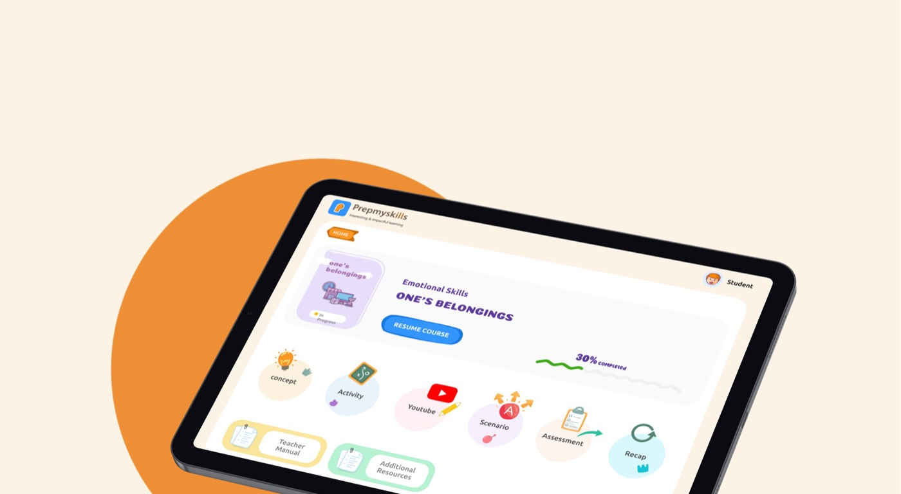
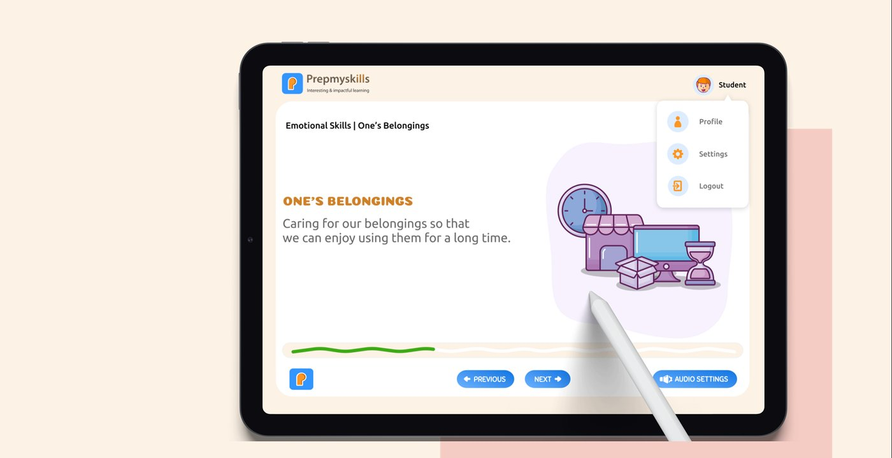
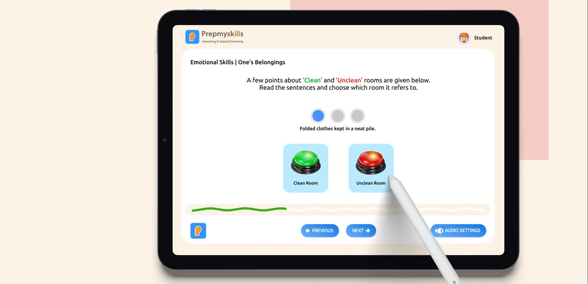
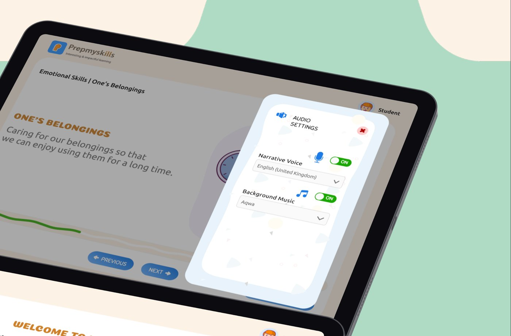
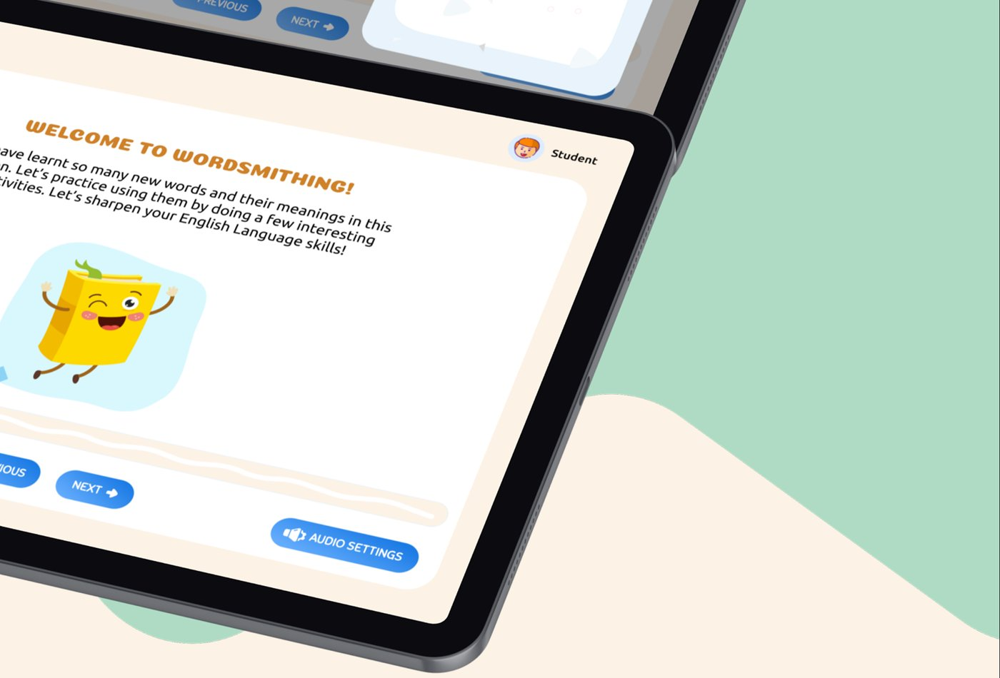
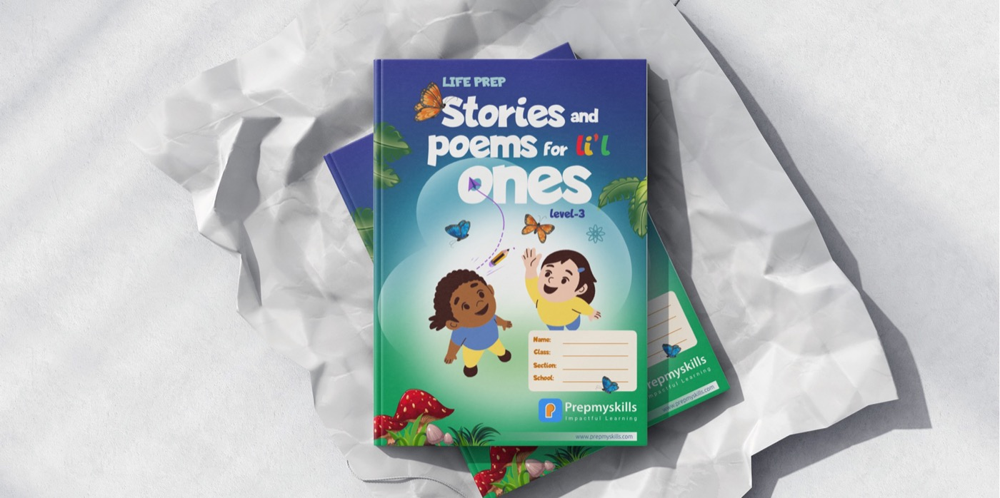
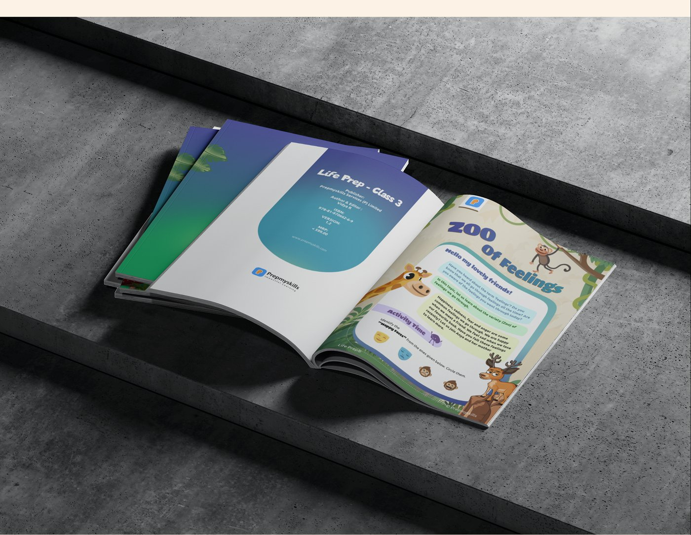
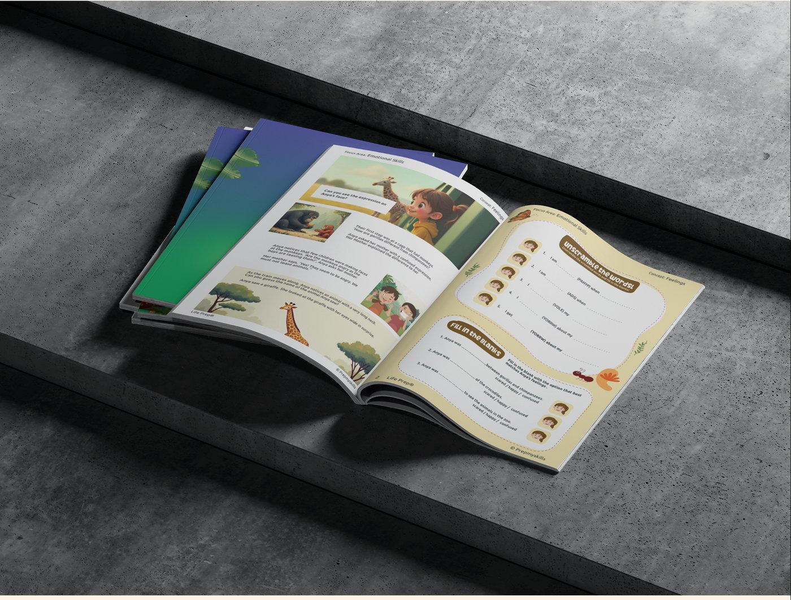